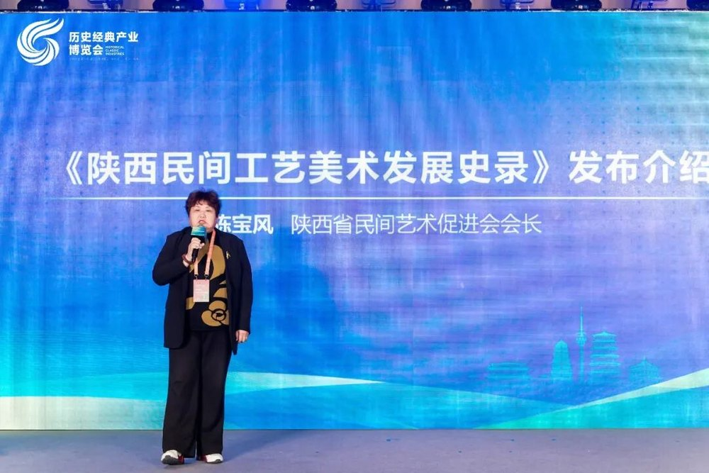

11월 21일, 산시성 공업정보화청이 주편한 『陝西民間工藝美術發展史錄』이 항저우에서 열린 제1회 역사경전산업박람회(11월 20~22일)에서 정식 발표되었습니다. 정다밍문화산업그룹 전승자이자 핑리현 뉴왕생칠연구소 소장 위안후이즈(袁辉志)와 핑리현 문화관 관장 쩌우후이산(邹惠珊)이 공저한 「이안캉칠기위대표적섬남칠공예발전사(以安康漆器为代表的陕南漆工艺发展史)」가 이 책에 수록되었으며(281쪽), 친바(秦巴) 칠공예가 체계적인 사론으로 산시성 민간공예의 공식 기록에 오르게 되었습니다.

삼진의 손기술을 위한 「족보」를 엮다
이 책은 산시성 공업정보화청이 주편하고 산시성사회과학원·산시성민간예술촉진회가 공동 편찬했으며 산시인민미술출판사가 출판했습니다. 3년의 작업과 40여 차례의 현장 조사를 거쳐 산베이·관중·산난 3대 지역의 목판연화·밀짚화·마소안보·종이오리기·그림자 인형 등 10여 종 대표 민간공예의 발전 계보, 예술적 특성, 현대 전승 현황을 체계적으로 정리했습니다. 수록된 22편의 글은 칠예·그림자 인형·사의목조·종이오리기·도자·농민화·펑샹니소·자수·목판화·청동공예·문화재 복원·보석 상감 등 여러 분야를 아우릅니다.
이 책은 실천자 자신의 구술과 1차 현장 자료를 논거로 삼았습니다. 위안후이즈의 논술은 리지유(李继友), 왕톈원(汪天稳), 스융저(史永哲), 천산차오(陈山桥), 장수민(张树珉), 류중양(刘忠阳), 양원종(杨文宗) 등 여러 선생의 자술과 인터뷰와 나란히 실려, 이 책의 「진실성·다양성·활태성·권위성」을 떠받치는 학술적 토대를 이룹니다. 또한 이 책은 제36회 우수미술도서 「금우배(金牛杯)」 동상을 수상했습니다.

『시경』에서 『본초강목』까지 — 산난 칠예의 계보
수록 논문 「이안캉칠기위대표적섬남칠공예발전사」는 위안후이즈와 쩌우후이산이 함께 썼습니다. 『시경(詩經)·진풍(秦風)』의 「판유칠, 습유률(阪有漆, 隰有栗)」과 『산해경(山海經)·서산경(西山經)』의 친링 일대 야생 옻나무 기록에서 출발해, 선진 시기 칠예의 형성, 진한 시기 공예 발전과 규모 확대, 위진남북조·당송·원명청을 거친 끊임없는 혁신이라는 지역적 흐름을 정리했습니다. 또한 안캉 칠기가 산난 지역의 민속문화·종교신앙·심미관념을 융합하고, 용봉·서수·화조 문양에 길상여의·기복납상의 뜻을 담아 산난 문화 전승의 중요한 매개가 되었음을 지적합니다.
나아가 사료로 안캉 생칠의 품질 원류를 뒷받침합니다. 도홍경(陶弘景)은 「지금 양주(량저우, 지금의 안캉·한중 일대)의 옻이 가장 뛰어나다」고 했고, 오대(五代) 한보승(韓保昇)은 「옻나무는 금주(金州)의 것이 가장 우수하다」고 적었으며, 이시진(李時珍)은 『본초강목(本草綱目)』에 「사람들이 옻나무를 많이 심는데 금주의 것이 좋아서 세상에서 금칠이라 불린다」고 기록했습니다. 「금주공칠(金州貢漆)」은 일찍이 황실 공물이 되었고 『당서(唐書)·지리지(地理志)』『태평환우기(太平寰宇記)』『섬서통지(陝西通志)』『흥안부지(興安府志)』 등 고적에도 관련 기록이 전합니다. 금주가 바로 지금의 안캉이니, 정다밍이 친바에 뿌리내리고 옻나무 한 그루에서 출발한 근거가 여기에 있습니다.

기술을 시간 속에 기록하다
1925년 「정다밍(正大明)」 상호가 「우왕칠(牛王漆)」로 업을 일으킨 이래 정다밍은 5대에 걸쳐 옻나무를 심고, 옻을 채취하고, 옻을 정제하고, 그릇을 완성하는 전 과정의 「근원(源)」 길을 걸어왔습니다. 기술의 유래를 고증해 지면에 남기는 일은 그것을 교실과 산업으로 가져가는 일만큼 중요합니다. 11월 12일 위안두안자오가 산시사범대학 문학원 초대 비유재 멘터로 위촉된 지 며칠 만에, 친바 칠공예는 다시 성급 사록(史錄)에 확인 가능한 기록을 남기게 되었습니다.
신간 발표회와 함께 업계 증서식도 열려 『陝西民間工藝美術發展史錄』이 항저우사범대학 미술학원 등에 정식 기증되었습니다. 삼진 공예의 기록이 디자인 교육과 젊은 연구자의 시야로 들어가는 계기입니다.